Chapter 19
Harmony and coordination
19.1 Introduction
In the decadent West, we are experiencing a penchant for Eastern culture at the moment. Developments are going so quickly that there is insufficient time for reflection. For this reason, more and more people are following meditative courses, like yoga.
There is also a tendency to go in for combat sports. As for myself, I have never been able to put my mind to such things, but there is one Eastern combat sport that has a philosophy behind it that appeals to me: Tai Chi. I am told that with Tai Chi, the student is taught typical defensive techniques based on evasion. Tai Chi is all about your own inner balance. The Tai Chi master does not have to be strong, but keeps his balance in all situations, and forces the opponent to use all his power against himself. As he is in full harmony with himself, moving along with the opponent’s unexpected swings, the latter will hit nothing but air.
The following remark of a Tai Chi master is significant: ‘I use only 10 pounds in order to receive 1000 pounds.’ By evading the blows in the nick of time, he causes the 1000 pounds to miss their target, and the opponent will get unbalanced rather than he.
This phenomenon definitely applies to chess too. If you take care that everything is in harmony within your own ranks, nothing much can happen to you. Of course, a player must watch carefully which blows the opponent wants to strike ‘on the body’. By moving along with him and causing him to fight against himself, you need only ’10 pounds to receive 1000 pounds’.
The following game is by the Dutch master Johan van Mil from Eindhoven, who sadly passed away in 2008 at the age of 49. With him I travelled through Europe for several years, in search of adventure and eternal fame. From a young age, Van Mil suffered from kidney problems. When he finally underwent a transplant, he was afraid of one day unexpectedly receiving a blow on this new kidney. This fear caused him to take up Tai Chi, with which, as he said, he also achieved a better inner balance. In the following magnificently played game, he applies the art of evasion to perfection:
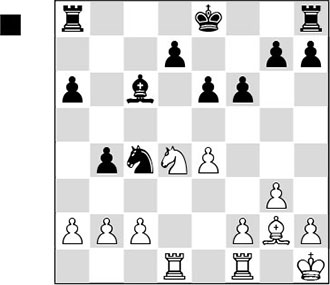
20…♗b7!
The first signs of the Tai Chi strategy. With 20…♘xb2?! Black would agree to engage in the fist fight that White has in mind. After 21.♖b1 ♘c4 22.♘xc6 dxc6 23.♖xb4 Black hasn’t exactly made much progress.
21.♖c1 ♖c8
21…♘xb2 22.♖b1 ♘a4 23.♖xb4 ♘c5 gives White reasonable counterplay – he will even have a slight edge.
22.b3
Now, after 22.c3, Black could capture on b2: 22…♘xb2! 23.cxb4 ♔e7, and the nasty threat is 24…♘d3.
22…♘d6 23.f3 ♔e7 24.♘e2
White has to try to solve his pawn weakness on c2 as soon as possible, otherwise Black will double his rooks on the c-file.
24…♘b5 25.c4 bxc3 26.a4 ♘a7!
The knight will be eyeing the c6-square after a while, from where it could make use of the weakness that has just been created on b4.
27.♘xc3 ♖c6 28.♘a2 ♖hc8
Threatening 29…♖c2.
29.♖xc6 ♖xc6 30.♖c1
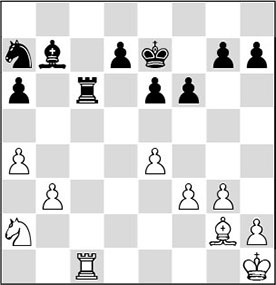
30…♖d6!
Black avoids the rook swap, since in the following his rook will have more influence than his opponent’s.
31.h4?!
Weakening his pawn formation, which will cost him dearly later on.
Admittedly, 31.♖c7 was not possible in view of 31…♖d1+ 32.♗f1 ♖xf1+ 33.♔g2 ♖a1, but it would have been better to continue 31.♔g1.
31…♘c6 32.♖c3 ♖d2 33.♘c1 ♘d4
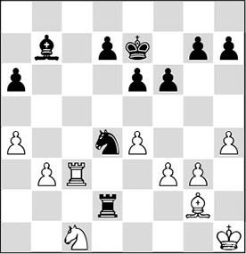
The knight opts for the central square d4, and thus Black is ready for …f6-f5.
34.b4?!
This more or less leads to the loss of a pawn, but White hopes that he will be able to hold a draw in the position with four pawns versus five on the same wing.
34…♗c6 35.b5
In his distress, White gives a pawn, as he is afraid that Black will later emerge with an outside passed pawn.
The continuation 35.a5 ♗b5 looks bad for White, since the threat of 36…♖b2, winning a pawn, cannot be averted, and the weak a-pawn will soon be lost as well.
35…axb5 36.axb5 ♘xb5 37.♖d3 ♖b2
Once again, Black avoids the rook swap. His pieces are arranged harmoniously, whereas any cohesion between the white pieces is lacking.
38.♘b3
White intends at least to land a blow below the belt with 39.♘d4.
38…♘d6
Once again, Black avoids all confrontations.
39.♘d4 ♗b7 40.♖b3 ♖d2 41.♘b5
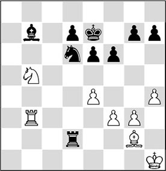
41…♘f7!
Meticulously, every piece exchange is avoided. Thus Black shows that he has fully mastered the ‘art of evasion’. In his comments to this game Van Mil wrote: ‘The white knight would have been best placed beside the board now; there is no function for it to be found anywhere.’
42.♘c3 ♗c6 43.♖b1
It is amusing to see White’s pieces continuously hitting thin air. The black position doesn’t offer a single target.
43…♘e5 44.♖d1 ♖c2 45.♘b1
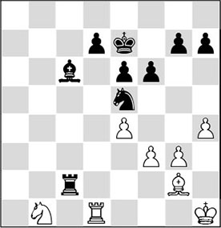
45…f5!
Now that he has sent the opponent’s 1000 pounds in the wrong direction, Black takes action. With the text move, he initiates the first ‘physical’ contact for ages. And he hits home immediately. A true Tai Chi master might have opted for 45…♘c4 here, creating the threat of 46…♖xg2! in the process.
46.♔g1
46.exf5? was out of the question, on account of 46…♖xg2 47.♔xg2 ♗xf3+, and Black wins a piece.
46…fxe4 47.fxe4 ♘g4
Threatening 48…♖xg2+ followed by 49…♘e3+. Rarely will grandmaster Vogt have felt so powerless in a game.
More in style was 47…♘c4, since here the knight is invulnerable, and, besides threatening 48…♖xg2, it also deprives the white knight of its most important squares.
48.♖e1?!
This leads to a quiet demise. White could still try 48.♗f3 ♘e3 49.♖d3 ♖c1+ 50.♔f2 ♘c4 51.♘d2, when at least his pieces would be brought back to life.
48…♘f6 49.♘a3 ♖c3
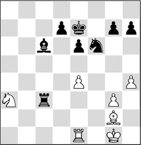
After a knight move, a second pawn will be lost, and more losses will follow soon. The white player didn’t feel like waiting for this and resigned.
Now we are talking about harmony, it is important to recognize when the harmony within your own lines has been disturbed. This may be caused by a number of reasons:
A) The pieces are in each other’s way
A1) Due to lack of space, some of the pieces are hindered in their manoeuvres
We have seen clear examples of this elsewhere in this book.
A2) Two pieces want to make use of the same square
This principle is explained by the Romanian grandmaster Mihai Suba in his book Dynamic Chess Strategy:
Clearing Policy
The position must be cleared of strategic and tactical impurities in order to obtain a clear and realizable strategic advantage. It should go without saying that in all themes, what is good for one side is bad for the other. As a corollary of the ‘clearing policy’ we can infer the need to refrain from ‘clearing’ when the opponent has an obvious strategic advantage, in order to avoid leaving it as the main factor in the position. In a Soviet magazine I once saw an interesting article entitled ‘Lishnaya Figura’ (= roughly ‘The Superfluous Piece’). It stressed the inactivity of the superfluous piece, which may cause trouble for its owner. Here is an example:

White to move should play
1.♘xc7 ♕xc7 2.♘d5
with a clear advantage of a dominant knight against a bad bishop and automatic play on the queenside by b4, bxc5 etc. Black to move should avoid the exchange and make the knight on c3 superfluous, e.g. 1…♘e6, keeping the game alive with good counterchances on the kingside.
A3) Due to specific circumstances, development has been disturbed considerably, and it is hard to complete it (see the game Botvinnik-Yudovich)
B) The cooperation between the pieces has been disturbed
B1) Due to the activity of the enemy pieces, one’s own pieces are ‘wrong-footed’ (see the game O’Kelly de Galway-Castaldi)
B2) A certain piece can do nothing due to the pawn structure (see the game Nimzowitsch-Rubinstein)
B3) Pieces are hitting thin air, lacking targets (see the game Vogt-Van Mil given earlier)
B4) A certain piece is inconveniently in the way, disturbing the harmony between the queen- and the kingside (see the game M.Gurevich-Timman)
It’s high time to discuss the above-mentioned games.
SL 3.6 (D96)
1.c4 ♘f6 2.d4 g6 3.♘c3 d5 4.♘f3 ♗g7 5.♕b3 c6 6.cxd5 ♘xd5 7.♗d2 0-0 8.e4
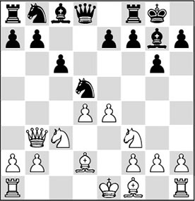
8…♘b6?!
This is the root of all the evil that will befall Black later in the game. He should have preferred the exchange on c3.
9.♖d1 ♘8d7 10.a4! a5
Thus Black weakens the b6-square, adding to his strategic problems.
He had a chance to become active, but then he would have had to sacrifice an exchange after 10…e5 11.dxe5 ♘xe5 12.♘xe5 ♗xe5 13.♗h6 ♕e7 14.♗xf8 ♕xf8 – which, incidentally, would certainly have given him compensation.
11.♗e3
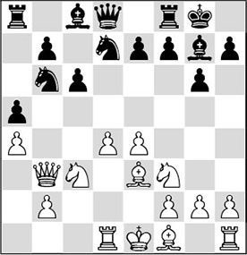
In this position, Black faces a problem that we can compare to the famous cutting of the Gordian knot. In order to develop his queenside, Black has to involve his c8-bishop in the game. To achieve this, he will have to reposition his d7-knight, but there are enormous disadvantages attached to this. For instance, 11…♘f6 is strongly met by 12.d5!, and after 12…♘bd7 13.dxc6 bxc6 Black is left with a terrible weakness on c6, for which he hardly has any dynamic compensation.
So the knight cannot leave d7, as that will leave its colleague on b6 unprotected. Let’s put it like this: if Black wants to remove his d7-knight, he will first have to do something about the b6-knight. But, as is easy to establish, the b6-knight has no squares available to it. A set-up with …♖b8 followed by …♘a8 does not provide a solution either, since then White would have ♗e3-f4, apart from the fact that on a8, the knight is not exactly beautifully placed either.
So everything is connected. The problem of the b6-knight cannot be solved until White no longer has the possibility of d4-d5. Black cannot move a piece before he has done something about this.
Yudovich conceived the plan to relieve the pressure on his position by driving away the white queen from b3 with the manoeuvre …♕d8-c7-d6-b4.
11…♕c7 12.♗e2 ♕d6 13.♘a2!
Botvinnik keeps his grip on the opponent, and doesn’t allow him to untie himself with 13…♕b4+. The misplacing of the white knight is only a temporary problem.
13…e6
As long as White has a set-up with ♕b3 and ♗e3, there is hardly anything sensible to be found for Black.
14.0-0 h6 15.♖c1!
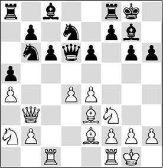
White prepares the development of the king’s rook to d1.
15…f5
The black player wants to drive away the bishop on e3 by force, and he also hopes to get hold of the d5-square, after which he could nurse some hopes of cutting the Gordian knot.
16.♘c3
A good moment to bring the misplaced knight back into the game.
16…♔h7
The black king leaves the vulnerable a2-g8 diagonal, allowing Black the possibility of working with …♕d6-b4.
Incidentally, 16…fxe4 would offer no relief either after 17.♘xe4, and now:
A) 17…♕e7. The best defence, after which White does best to continue with 18.♘e5!, still dictating the game;
B) Provocative, but less good is 17…♕d5 18.♕c2!, and now:
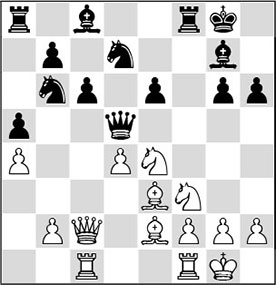
Analysis diagram
B1) 18…♖f7, intending 19…♘f8, fails to 19.♘c3, winning the g6-pawn;
B2) 18…♘f6 19.♘c3, and again the pawn g6 disappears from the board, with grave consequences;
B3) The violent attempt 18…♘xa4 does not offer any relief after 19.♗c4 ♕f5 20.♘h4 ♕h5 21.♗xe6+, and White has a lethal initiative.
17.♖fd1 fxe4?
After this, Black will no longer be able to involve his pieces in the game. In the meantime, he has opened the centre for his opponent, and as a result his king falls prey to the combined powers of the white pieces.
Black should now have continued consistently with 17…f4!. Then, after 18.♗d2, 18…♕b4 looks like a nice try for Black.
A) Not advisable for White is 19.♕xb4?! axb4 20.♘b1 ♖xa4 21.b3 ♖a2 22.♔f1, followed by 23.♗xb4, and White has the better endgame, but this is not yet disastrous for Black;
B) 19.♕xe6?! ♘e5! 20.♕a2 ♘xf3+ 21.♗xf3 ♗xd4 is still playable for Black;
C) The correct reaction is 19.♕c2!, threatening a discovered attack by the knight. If Black prevents this with, for example, 19…♕e7, then White continues with the strong 20.e5, after which the weakness of the g6-pawn will be Black’s downfall.
18.♘xe4 ♕b4 19.♕c2!
Botvinnik directs his attention to the weak point g6 and does not indulge in the e6-pawn with 19.♕xe6?!, since this would only be of service to his opponent after 19…♘f6. At the cost of a pawn, Black would have managed to bring his pieces into play.
19…♕xa4 20.b3 ♕a3 21.♘h4!
A new attack on the g6-pawn, which now comes under heavy fire.
21…♕e7
This does not parry the threat, but there was no longer anything sensible to be found. After, for instance, 21…a4 22.bxa4 ♕xa4 23.♕d3 ♘d5, White again deals the decisive blow with 24.♘xg6!, as will happen in the game.

22.♘xg6!
The inevitable combination that had been hanging in the air for a while.
22…♔xg6 23.♗h5+!
This magnet attack constitutes the final blow. Mate is forced after 23…♔xh5 24.♘g3+ ♔g4 25.♕e4+ ♖f4 26.♕xf4. Therefore, Black resigned.
When playing through games by good grandmasters it strikes me that they almost invariably set up their pieces in an optimal way. This is not so easy, for how can you make your pieces cooperate? In many cases, what counts is to establish which pieces are not active, and how they can be given a brighter future. And, as a rule, this is closely connected with the pawn structure. The following example is a good illustration.
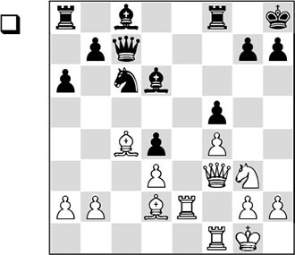
Most of the white pieces are active, or will soon become active. White has just opened the e-file to increase the activity of his pieces. Now White hopes to make use of the weakness of the e6-square. How should he go about this?
18.♘h1!!
This move is based on a brilliant concept. Nimzowitsch has discovered that his knight is not well placed, and manoeuvres it to squares where it will have a better future. Via h1-f2-h3-g5, the knight will be involved in a dangerous attack on the black king.
18…♗d7 19.♘f2 ♖ae8 20.♖fe1 ♖xe2 21.♖xe2 ♘d8
Not 21…♖e8 22.♖xe8+ ♗xe8 23.♕d5 ♘e7 24.♕xd4, and White has won a valuable pawn.
22.♘h3 ♗c6
Black cannot keep the white knight out with 22…h6, because 23.♘g5! would follow anyway. After 23…hxg5?? it is mate with 24.♕h5.
23.♕h5 g6 24.♕h4 ♔g7
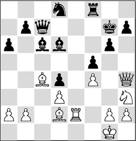
25.♕f2!
White is combining several ideas. The attack on d4 is unpleasant for Black.
25…♗c5
25…♕b6 was no solution either, as White would have the tricky 26.♕e1!. If Black would then help himself to the b2-pawn, he would catch a cold: 26…♕xb2 27.♗a5 ♕a3 28.♗b6 ♗c5 29.♗xc5 ♕xc5 30.♖e7+, and the white attack is decisive.
26.b4
This was the intention of White’s previous move. The bishop now has to change diagonals, which makes the e7-square vulnerable.
26…♗b6?
The pawn loss after 26…♗e7 27.♕xd4+ ♗f6 would still have been the lesser of two evils. With the text move, the black player could have tripped up badly.
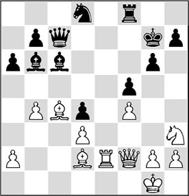
27.♕h4?
Remarkably enough, Nimzowitsch does not seize this sudden chance.
With the subtle 27.♕e1!, he could have secured the point. The penetration of the rook on e7 is devastating, for example: 27…♕d6 28.♖e7+ ♔h8 29.♘g5.
27…♖e8!
In this way, Black remains on his feet.
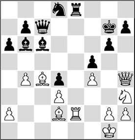
28.♖e5!
Black has defended craftily, but now he faces great problems again.
28…♘f7?!
An ugly inaccuracy, just when the black player seemed to have matters in hand again.
The rook cannot be exchanged due to mate: 28…♖xe5? 29.fxe5 ♕xe5 (29…♘f7 is met by the marvellous
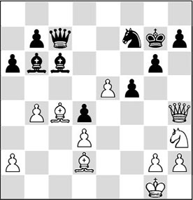
Analysis diagram
30.♗h6+!! ♘xh6 31.♕f6#, and so White can maintain the pressure) 30.♕h6+ ♔h8 31.♕f8#.
After 28…h6, White can take aim at the weakened king’s position with 29.g4!?. Now, 29…fxg4? is immediately losing, in view of the pretty surprise attack 30.f5! h5 (or 30…g5 31.f6+! and the black position collapses like a house of cards)
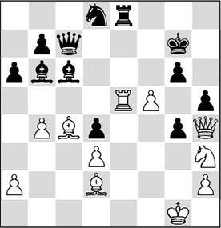
Analysis diagram
31.♗h6+!! ♔xh6 (or 31…♔h7 32.♕f6, and it’s mate in four) 32.♕g5+ ♔h7 33.♕xg6+ ♔h8 34.♖xe8+ ♗xe8 35.♕g8#.
But after 29…♕d6!, Black is not in trouble yet.
29.♗xf7!
White gives up his beautiful bishop in order finally to allow his knight to enter the fray.
29…♕xf7 30.♘g5 ♕g8 31.♖xe8 ♗xe8 32.♕e1!
It is amusing to see how from this diagonal (e1-h4), the queen has already caused quite a stir in the black camp. With the text move, the disorientation of the black pieces is exposed. Black cannot prevent the invasion via e5 or e7.
32…♗c6 33.♕e7+ ♔h8
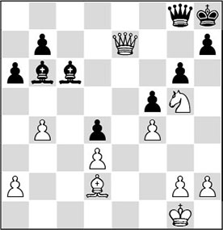
34.b5
In my source, this move is awarded with an exclamation mark, but it looks as if Nimzowitsch overlooks a quicker win here with 34.♘f7+! (34.♘e6 leads to the same result) 34…♔g7 35.♘d8+ ♔h6 36.♘e6. By sending the knight around the block and putting it on e6, White definitively ties up the mating net around the black king. Incidentally, the combinative idea that the white player is envisaging is also worth seeing.
34…♕g7
A pity. Black decides to give a piece in order not to be mated, but this won’t save the game. He would have done better to grant his opponent the honour to finish his beautiful masterpiece in style:
A) 34…♗xb5 costs a piece after 35.♕f6+ ♕g7 36.♕xb6;
B) After 34…axb5 35.♘e6 h5 36.♕f6+ ♔h7 37.♘f8+ ♔h6 38.♕g5+ ♔g7 39.♕xg6+ ♔xf8, 40.♗b4+ was the playful idea envisaged by Nimzowitsch when he opened the a3-f8 diagonal for his bishop with b4-b5.
The game continued:
35.♕xg7+ ♔xg7 36.bxc6 bxc6 37.♘f3 c5 38.♘e5 ♗c7 39.♘c4 ♔f7 40.g3 ♗d8 41.♗a5 ♗e7 42.♗c7 ♔e6 43.♘b6 h6 44.h4 g5 45.h5 g4 46.♗e5
And, much too late, Black resigned.
In the following game Black comes a cropper because his pieces are wrong-footed.
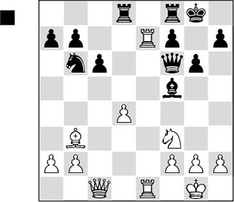
At first sight this position seems OK for Black. White is suffering from an isolated pawn that can be blockaded with …♘b6-d5. What does stand out is the great activity of the white rooks.
19…♗c8?
With one blow, this move changes the position from quite playable to very hard to handle for Black. The correct path was 19…♖d7, even though White would also have the better prospects after 20.♕c5!.
20.♕c5!
With this queen move White steps up the pressure, and now he is ready for 21.♘g5.
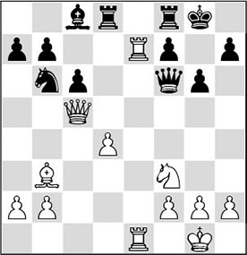
20…♕d6?
But this is a really serious mistake. Slowly Black’s pieces are ending up on the wrong squares.
Better was 20…♘d5, with the possible continuation 21.♗xd5 ♖xd5 22.♕a3 (on 22.♕xa7, 22…♗g4! is strong) 22…♗g4 23.♖xb7 (23.♘e5 is no better in view of 23…♗c8!, and 23.♖e8 ♕d6 is also completely equal) 23…♗xf3 24.♕xf3 ♕xf3 25.gxf3 a5, and probably Black will be able to keep the game within drawing margins.
21.♕a5
The immediate 21.♕g5 also definitely deserved attention.
21…♕b8?
Much too passive. Black could still have tried 21…♗g4, although by now his prospects are not very rosy: 22.♘g5 ♕xd4 (22…♘d5 is simply met by 23.♖xb7) 23.♗xf7+, and it is all over.

22.♕g5!
Now that the black pieces are tucked away on the queenside, White comes up with this queen switch to the kingside.
22…♘d5
In desperation, Black closes off the a2-g8 diagonal. The consequences of 22…♕d6 23.♕h6 ♕f6 24.♘g5 ♕g7 25.♘xf7 would also have been disastrous for him.
23.♕h6
1-0
There is nothing to be found against the threat of 24.♘g5. In this game the black player went astray because he neglected the cooperation between his pieces. Consequently, several pieces became passive, whereas all of the white player’s pieces became active. This surplus in activity resulted in an unstoppable attack on the king.
In the following game, one single piece is very much in the way of its own colleagues. As a result, the black player is greatly hampered in his manoeuvres. This leads to disharmony in his position, which the white player manages to exploit admirably.
NI 24.11 (E33)
1.d4 ♘f6 2.c4 e6 3.♘c3 ♗b4 4.♕c2 ♘c6 5.♘f3 d6 6.♗d2 0-0 7.a3 ♗xc3 8.♗xc3 ♕e7 9.g3 e5 10.d5 ♘d8?
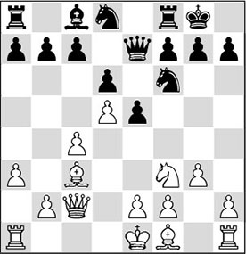
Timman must have regretted this later. The knight should not go to this square, since it seriously disturbs the harmonious set-up of the black pieces. As we will see, the knight will still be standing here at the end of the game. Better was 10…♘b8, although also here Black has not solved his opening problems yet.
11.♗g2 ♗g4?
It would have been better to create some kind of future for his knight on d8. For that purpose, Black should probably have moved his king’s knight, intending to prepare 12…f5 or 12…f6, vacating the f7-square for the unfortunate queen’s knight. After the game, the players looked at two interesting possibilities, which prove that the position is not so bad for Black:
A) 11…♘g4!? 12.h3 ♘h6 13.♗d2 f5 14.♗xh6 gxh6 15.e3 f4, with counterplay;
B) 11…♘h5 12.e3 f5 13.0-0-0 ♘f7 14.♘h4 g6 15.f4, and White is a tad better.
12.♘h4!
A strong move by the Russo-Belgian chess player from Turkey. White is eyeing the f5-square, and at the same time gets ready for the push f2-f4.
12…c6 13.0-0 cxd5 14.cxd5 ♕d7
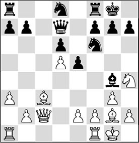
By the exchange of the light-squared bishops, Black wants to bring some relief to his cramped position, but he has reckoned without his opponent.
15.f4!
Now that the black pieces are unfortunately placed, White considers that it is time to act. He is threatening 16.fxe5, or, possibly, to lock in the black bishop with 16.h3 ♗h5 17.g4, followed by 18.f5.
15…♕b5 16.e4
Much stronger than 16.fxe5?, which after 16…♘xd5 is playable for Black.
Perhaps 16.♕d2 was even to be preferred. After 16…♗xe2 17.fxe5 dxe5 18.♖fe1, White’s chances should be rated highly.
16…♗e2
A dubious plan, which meets with an energetic counter by White. However, it is not easy to suggest a worthy alternative for Black.
For instance, after 16…♘d7 17.♖ae1 f6 18.h3 ♗h5 19.♘f5 ♕b6+ 20.♕f2, Black also lands in virtually insurmountable trouble. In order to protect the weakness on d6, he has to play 20…♘f7, but this, in turn, will cause trouble for his bishop on h5. This illustrates how badly the black pieces are standing in each other’s way. One illustrative variation: 20…♘f7 21.g4 ♗g6 22.♘e7+ ♔h8 23.f5, leading to a lost position for Black.
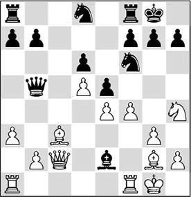
17.♖fe1
Gurevich is not to be tempted into interesting sacrificial play, but directs his fire at the vulnerability of the black bishop. In the tournament book, IM Cor van Wijgerden, who had commented on the game for the spectators, gives the following spectacular line that they had found together: 17.fxe5, and now:
A) 17…♗xf1 18.exf6 ♗xg2 19.fxg7 ♖e8 20.♘f5;
B) Nor is any solace offered by 17…♗d3 18.♕d2 ♘xe4 19.♗xe4 ♗xe4 20.exd6 ♕xd5 21.♕xd5 ♗xd5 22.♘f5, and the white domination is decisive;
C) Van Wijgerden himself remarks that unfortunately, 17…♘g4!? puts a spanner in the works. However, closer investigation shows that White can obtain an advantage then too, with 18.exd6 ♗xf1 19.♗xf1 ♕c5+ 20.♔h1, and the white pieces are cooperating excellently;
D) 17…dxe5 18.♖xf6 gxf6 19.♘f5, and White has a strong attack.
17…♗d3 18.♕d2 ♖e8
The move 18…♘g4 looks like a nice try for Black to take control, but after the measured reply 19.♗f3! h5 20.h3 ♘f6, the knight must return empty-handed, and Black has got himself into an even tighter spot.
Neither does 18…♕c4 offer a solution. Here, 19.b3! is absolutely the best continuation. After 19…♕a6 20.fxe5 ♘g4 21.♘f5, Black no longer has any say in the proceedings, either.
19.♔h1
Useful prophylaxis, after which Black finds himself in big trouble. His bishop on d3 is ‘hanging in the air’ and he also has to reckon with the threat of 20.♘f5, after which the pawn on d6 cannot be protected anymore (20…♕a6 21.♘xd6! ♕xd6 22.♕xd3). Here we see how badly the black pieces are cooperating.
In the tournament book, Van Wijgerden indicates that the immediate 19.♘f5, with the double threat of 20.♘xd6 and 20.fxe5, would also have been strong.
19…g6
It is hard to suggest something sensible for Black, but with the text move he jumps from the frying-pan into the fire. The knight must be kept from f5, but the remedy is worse than the disease. The weakening of the dark squares on the kingside has unpleasant consequences for Black, as will become clear shortly.
20.a4 ♕a6 21.b3!
Seizing the last square that Black had for his bishop, so that the latter will be the chief target in the following.
21…♖c8 22.♗f3!
White does not want to enter the complications arising after 22.♖ad1.
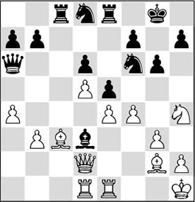
Analysis diagram
Black would then have had to go into swindle mode with 22…♘g4, which leads to the following variations:
A) 23.h3? ♖xc3! 24.♕xc3 ♘f2+ 25.♔h2 ♘xd1 26.♖xd1 ♗xe4 27.fxe5 (certainly not 27.♗xe4? ♕e2+, and Black has the last laugh) 27…♖xe5, and Black can finally breathe a sigh of relief.
B) However, 23.♖c1! is a good reply, as is shown by:
B1) 23…♕b6? fails to 24.♗f3! ♘f2+ 25.♔g2, and the black pieces have become entangled;
B2) 23…exf4 24.♕xf4 ♘e5, but here also, White’s position is preferable after 25.♕f6;
B3) 23…♘f6, and now 24.♖e3 is again met by 24…♘g4, but 24.♗f3 is very strong. White is simply threatening 25.♖cd1, after which the bishop on d3 is lost.
22…♘d7 23.♖ad1 ♘c5
The only way temporarily to save the bishop, but it won’t help.
24.fxe5
The beginning of the end. The black position will soon collapse.
By the way, the text move is better than 24.b4?, which fails to 24…♘xa4.
White had another good possibility in 24.♖e3, after which Black does not have the miraculous escape he has been planning with 24…♗f1, as after 25.♕e1! ♗d3 26.fxe5 dxe5 27.b4, the curtain also falls.
24…b5
Panic. Taking back on e5 is not on for Black. After 24…dxe5 25.♗b4!, White wins a piece. For example, 25…f5 26.exf5! (a killer. Also after 26.♗xc5 fxe4 27.♗a3 ♖c2 28.♕e3 exf3 29.♕xd3 ♕xd3 30.♖xd3 f2 31.♖f1, White wins. ‘In all these lines, the cheerless position of the black knight stands out’, Van Wijgerden adds superfluously) 26…e4 27.♕e3 b6 28.♗xc5 bxc5 29.♖xd3.
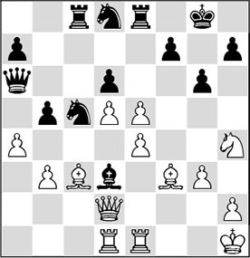
25.♗d4
Once more underlining the disorder in the black army. Timman’s pieces do not cooperate at all; on the other hand, Gurevich’s coordinate excellently.
25.exd6 also wins easily.
25…bxa4 26.♗xc5
Black resigned, since after he loses a piece he has nothing left to hope for.
In the following game, after a quiet start, suddenly all hell breaks loose. Alekhine’s imaginative power produces a jewel of a combination.
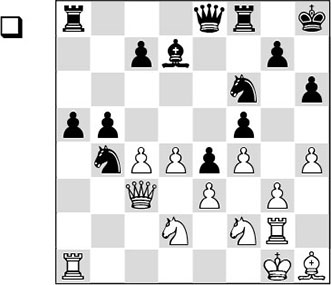
28.♘d1
In the preceding phase White has had little to say, and so any harmony between his pieces is hard to find. With his next move Alekhine starts a combination that is unequalled in its kind.
28…♘d3!!
An introduction to a brilliant concept.
29.♖xa5 b4 30.♖xa8
After 30.♕a1 ♖xa5 31.♕xa5 ♕a8! 32.♕xc7 (even worse is 32.♕xa8 ♖xa8 33.♘b3 ♖a3, and Black’s b-pawn cannot be stopped) 32…♕a1, the black queen wreaks havoc in the white position.
30…bxc3
Alekhine’s imaginative vision is astonishing. It is really a pity that with the perfunctory 30…♕xa8 31.♕b3 ♕a1, another winning position could have been reached, since here also, none of the white pieces are functioning well.
31.♖xe8
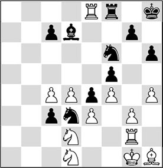
31…c2!!
The extraordinarily surprising point of the combination. In exchange for two rooks, Black promotes to a new queen, which will leave a trail of destruction in the disorientated white camp.
After 31…♖xe8?, all would have been for nothing. With 32.♘xc3, White escapes by his skin of his teeth.
32.♖xf8+ ♔h7 33.♘f2 c1♕+ 34.♘f1 ♘e1!
As a rule, a queen and a knight cooperate excellently in the attack. As before, we can see that there is a total lack of coordination between the white pieces.
35.♖h2 ♕xc4
Apart from capturing a pawn, Black brings a new piece into play. The threat of 36…♗b5 becomes acute.
Also definitely worthy of consideration was 35…♘c2, after which the pawn on e3 is doomed.
36.♖b8
White has no satisfactory solution to the above-mentioned threat. For example, after 36.♘d1 ♗b5 37.♖f2 ♘g4 he will also have a decisive material disadvantage.
36…♗b5 37.♖xb5
The only possibility to continue the struggle.
37…♕xb5 38.g4 ♘f3+ 39.♗xf3 exf3 40.gxf5 ♕e2
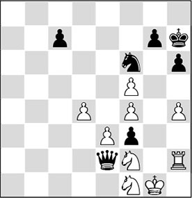
41.d5
White cannot move a single piece for fear of losing the crucial e3-pawn.
41.♘g3 is met by 41…♕xe3, and 41.♖h3 loses to 41…♘g4.
41…♔g8
With this ‘macho move’, Alekhine underlines Black’s helplessness. It is amusing to see how Black holds the position in his grip. The white pieces can hardly move.
42.h5 ♔h7!
Slightly sadistically, Black waits until White runs out of pawn moves and then strikes home. The white player could have spared himself the following slaughter.
43.e4 ♘xe4 44.♘xe4 ♕xe4 45.d6 cxd6 46.f6 gxf6 47.♖d2 ♕e2
Alekhine likes to have a good laugh.
48.♖xe2 fxe2 49.♔f2 exf1♕+ 50.♔xf1 ♔g7 51.♔e2 ♔f7 52.♔e3
Of course, 52.f5 wouldn’t have helped either after 52…d5 53.♔d3 ♔e7 54.♔e3 ♔d6 55.♔d4 ♔c6 56.♔d3 ♔c5, etc.
52…♔e6 53.♔e4 d5+
0-1
Exercises

It is clear that Black’s queenside pieces are somewhat tied up. Indicate how White can take advantage of this. Calculate a few variations to add strength to your verdict.
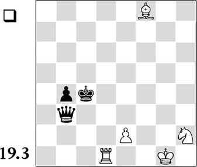
In principle, rook and two pieces win against a queen. But if the pieces are far removed from each other and there are also few pawns on the board, as here, the win appears to be an illusion. Still, White has an exceptionally beautiful method to make his pieces cooperate optimally. How can it be done?
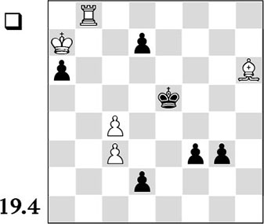
The black pawns can no longer be stopped by normal means. Something special is required here. How does White do it?